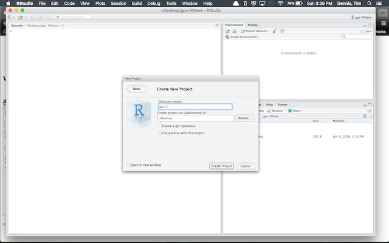
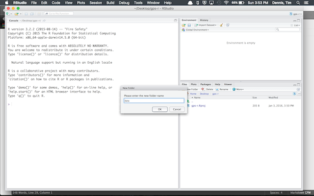

Create New Poroject in RStudio
- Open RStudio and go to
File>New Project in the top menu
- Select
New Directory
- Choose
Empty Project
- Type Directory Name, e.g., gps-r or what you want, and navigate where you want this to live (Desktop is usually easy to find)
- Select 'Create project' and now download the data
Download gapminder data into the project
We need a data folder inside our project.
- Once you create a project above you should be in the project folder and the following will work
- In RStudio far lower right pane, select 'Files'
- Click 'New Folder' and name 'data'
- In the console, run (without the >) > download.file('https://raw.githubusercontent.com/resbaz/r-novice-gapminder-files/master/data/gapminder-FiveYearData.csv', 'data/gapminder-FiveYearData.csv')
- This will download and place a gapminderFiveYearData.csv inside the data folder
With Screenshots
- Open RStudio and go to
File>New Project>New Project in the top menu
- Select
New Directory > Empty Project:

- Create a new data folder in project folder:

- Download gapminder data into data folder:
Run download.file('https://raw.githubusercontent.com/resbaz/r-novice-gapminder-files/master/data/gapminder-FiveYearData.csv', 'data/gapminder-FiveYearData.csv') from console
{kind=link}
{kind=link}